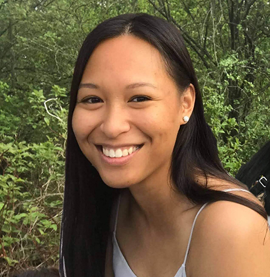

Arnie Jolo
Owner/Artistic Director/Graphic Designer
Arnie Jolo is a graphic designer with a background in psychology. She has always been interested in creative realms especially illustration, painting and fashion design. She has completed 2 years studying design and is a student member of the RGD. Her current experience at Agriculture and Agri-Food Canada helps elevate knowledge in corporate settings of graphic design.